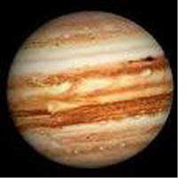

|
Юпитер в гороскопе
Юпитер — ваш проводник в мире благоприятных возможностей. Через него вы получаете то, что дается только один раз в жизни, то, что полностью соответствует сущности вашего Солнца и Луны. Положение Юпитера в Зодиаке указывает место, где следует искать благоприятную возможность, цель, с которой ее можно использовать, и вашу способность реализовать ее и получить от этого выгоду.
Обычно Юпитер называют планетой удачи, но это неправильно. Он просто указывает на благоприятную возможность в той сфере, которой соответствует его положение в Зодиаке, а удача в большей мере зависит от того, как человек использует возможность, чем напрямую от того, что предлагает Юпитер.
В одном знаке с Луной Юпитер отражает прямую и обычно эффективную реакцию на благоприятную возможность, которая чаще всего оказывается «наиболее удачной». В одном знаке с Меркурием Юпитер говорит о значительной расчетливости и упрямстве, о том, что увиденное и услышанное используется для личной выгоды. В одном знаке с Венерой Юпитер свидетельствует о таком характере эмоций, который позволяет обратить их в свою пользу. Ваши чувства гармонируют с шансами, предоставляемыми жизнью, и вы, скорей всего, не будете разрываться между любовью и карьерой. В одном знаке с Марсом Юпитер указывает на то, что вы энергично и решительно, с энтузиазмом и отвагой будете браться за подвернувшуюся благоприятную возможность, рисковать и играть в открытую.
Характеристика Юпитера в Льве представлена ниже:
Юпитер в Льве
Стремление к развитию, оптимизм, самоуверенность. Кипучая энергия и сильная конституция. Щедрость, великодушие, быстрая реакция, честолюбие, благосклонность, но за это вы требуете восхищения и высокой оценки. Склонность к роскоши, религиозным церемониям, театру, парадам, ритуалам. Вы не выносите ничего мелкого или незначительного и имеете тенденцию к преувеличению. У вас удивительный драматический талант. Вы должны жить смело, героически - иначе вам кажется, что вы просто существуете и прожигаете зря свои таланты. Вы жаждете признания, даже славы, вам нужно делать что-то, чем, как вы считаете, можно гордиться. Вы также обладаете необычайной способностью предаваться игре и веселью. Вы всегда готовы предложить свою помощь, очень амбициозны, способны выпутаться практически из любой ситуации и преуспевать в области политики. Поскольку вы очень хотите определить и осуществить свои цели, вы приступаете к действию, пока другие только мечтают об этом. Вы театральны и красивы, любите комфортную жизнь. Обладаете многими талантами, любите смешить других и очень общительны. Если есть вызывающие аспекты, вы можете стать самовлюбленным или высокомерным, не знающим меры человеком. Состояние здоровья у вас в основном хорошее, но могут возникнуть некоторые проблемы с сердцем и/или лишним весом.
|


 Тайна имени
Тайна имени Юпитер в знаке Лев
Юпитер в знаке Лев